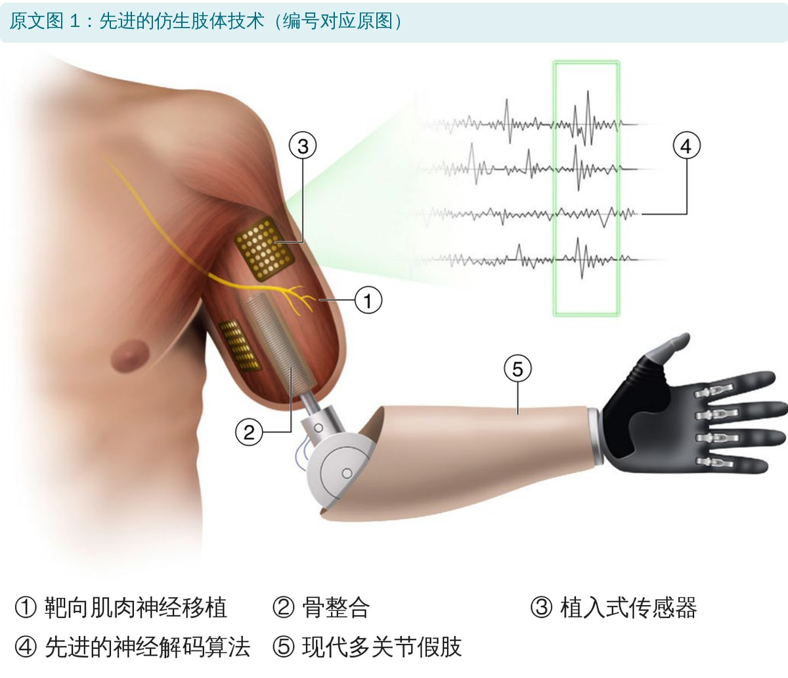
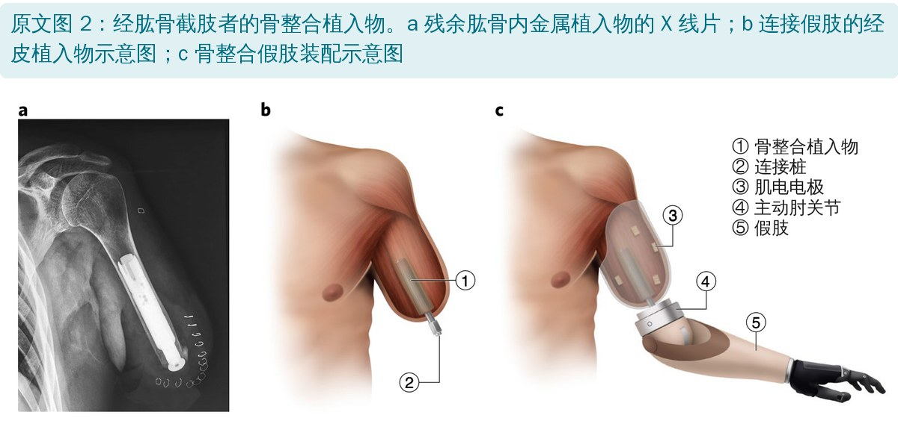
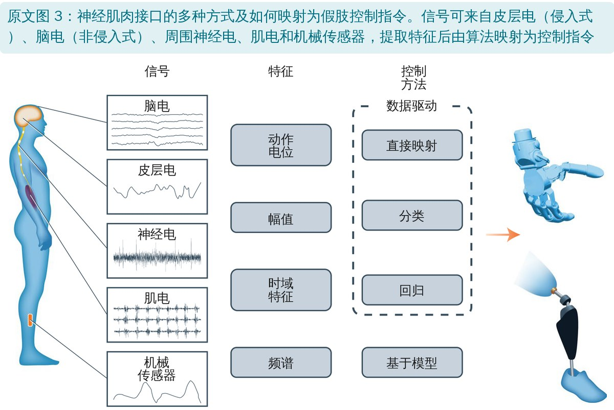
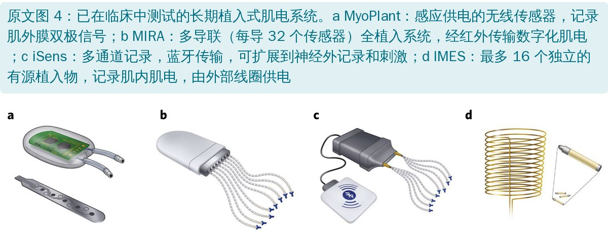
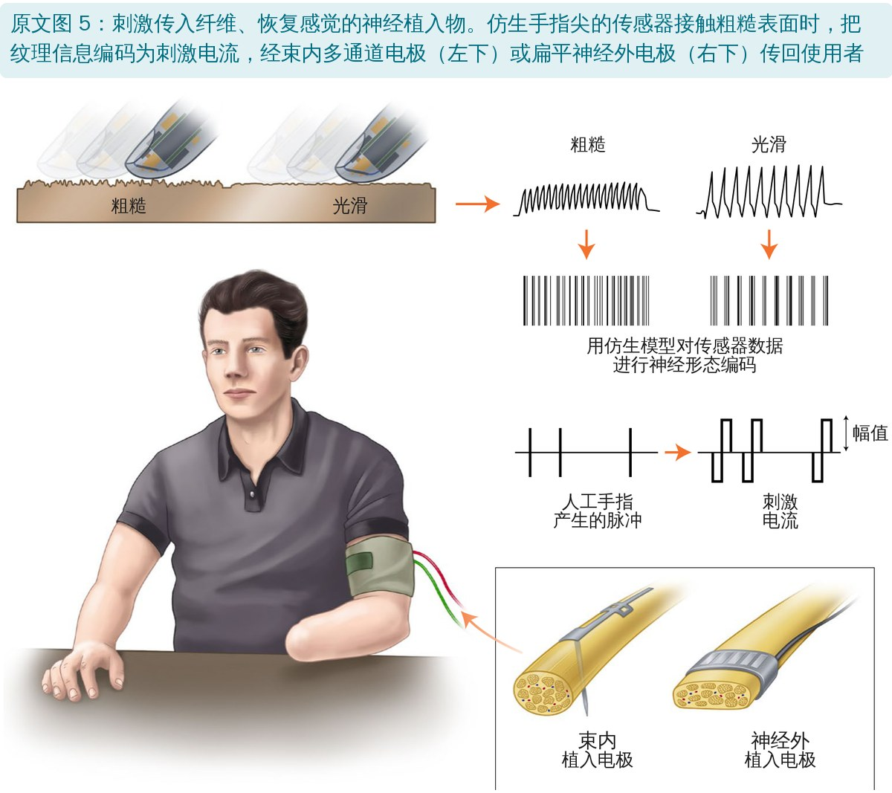
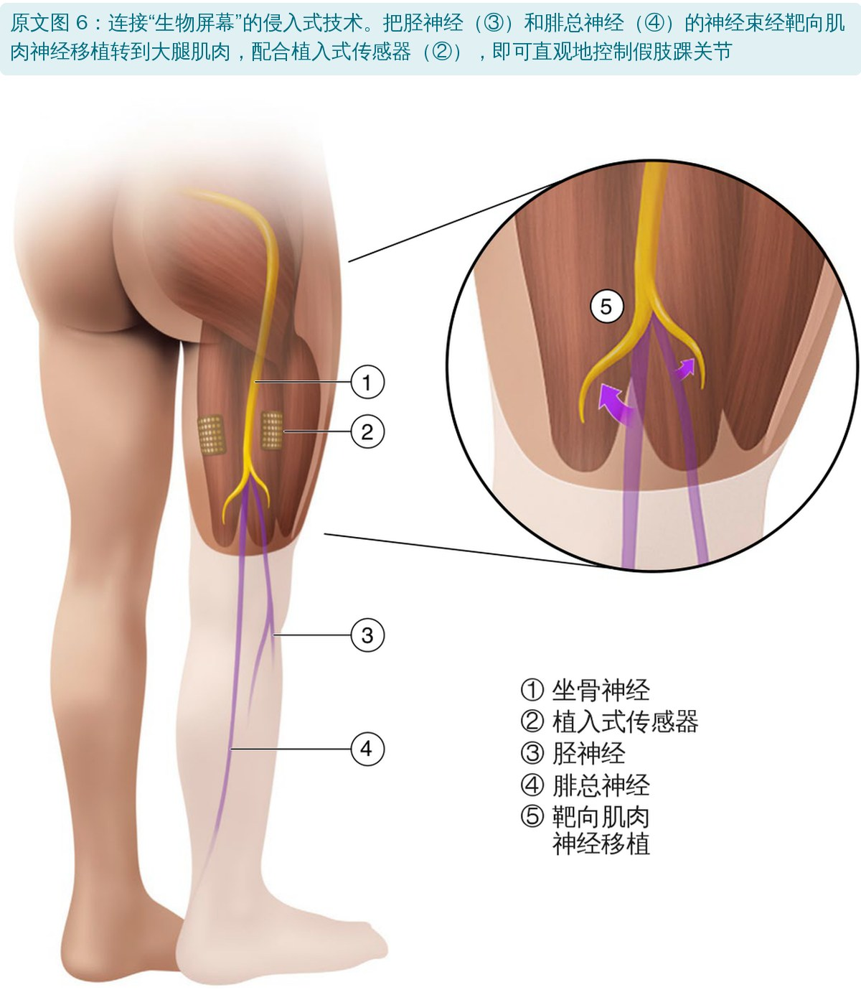

🔖原文信息（编者中文重排）
📚 文献信息
▪ Farina D, Vujaklija I, Brånemark R, et al. Toward higher-performance bionic limbs for wider clinical use. Nat Biomed Eng. 2023;7(4):473-485（2021 年在线发表）. doi:10.1038/s41551-021-00732-x
▪ 作者共 23 位，来自帝国理工、MIT、维也纳医科大学、Shirley Ryan AbilityLab 等，以及奥托博克、奥索等假肢企业
▪ 文章类型：观点（Perspective），不是系统综述
今天的机械手、机械腿已经很灵巧，能动的自由度、能感知环境的精度甚至超过真手真腿，但用户并不觉得它是自己身体的一部分，只当作工具。瓶颈不在假肢本身，而在假肢和身体之间怎么“接”：机械上怎么连、运动指令怎么传进去、感觉怎么传回来。
• 上肢截肢者最想要：单独活动手指、抓东西不滑、握力可调；还希望腕关节活动范围和速度更大、外观更自然、接受腔不闷热、更轻更安静、有感觉反馈
• 下肢截肢者最担心：平地走路问题不大，但平衡、不平地面和斜坡困难，大腿截肢者尤甚；接受腔皮肤问题发生率 24%～74%，健侧负荷不均还易引发骨关节炎
• 临床可用的上肢肌电控制50 年来几乎没变：最多控制两个自由度，还只能一个一个来；几乎没有临床假肢能把感觉传回给用户

🔖原文图 1：五项先进技术
作者认为下一代假肢要靠五项已在人身上测试过的技术：骨整合、靶向肌肉神经移植、植入式肌肉传感器、先进控制算法、植入式神经电极感觉反馈，再加上配套的康复训练。

🔖原文图 2：骨整合植入物
• 做法：把金属植入物插进残肢骨内，经皮穿出，直接连接假肢。这是目前唯一临床可行的接受腔替代方案
• 好处：连接更稳；不压软组织，没有接受腔带来的不适和疼痛；力直接传到骨骼，产生“骨感知”；短残肢也能保留关节活动，例如肱骨残端只要 6～7 cm 就能保留全部肩关节活动
• 风险：经皮植入有感染风险，初期应只用于免疫正常、骨量足够的人；没有接受腔的缓冲，冲击负荷可能引起疼痛甚至界面失效
• 现状：欧洲、澳大利亚已全面认证；首个大腿截肢植入系统 OPRA 已获美国 FDA 上市前批准；多中心长期随访显示局部感染率低于 5%
• 接受度不高：美国退伍军人调查中，单侧截肢者只有 28%、双上肢截肢者只有 13% 愿意考虑骨整合

🔖原文图 3：神经肌肉接口与控制方法
• 底层：根据假肢上的机械传感器调节关节位置、力矩或刚度
• 中层：有限状态机按步态阶段切换参数，靠简单逻辑就能实现循环步行
• 高层：判断用户想做什么活动（平地、斜坡、楼梯），可用遥控器、机器学习或夸张的身体动作切换
• 这种方式已用于很多微处理器膝关节，功能优于纯被动假肢，但还做不到完全随意控制；肌电识别出错可能导致失衡，所以下肢肌电控制尚未广泛用于临床
• 身体动力假肢：靠肩和躯干的大动作拉动，简单可靠耐用、能调握力，还有天然的力觉反馈，至今仍广泛使用
• 表面肌电：最常见，但常要“错位”控制（例如用屈伸腕的肌肉控制旋前旋后），切换功能靠拮抗肌共收缩，很不直观
• 模式识别：实验室准确率超过 95%，但电极位置随穿脱改变、皮肤状态、只能测浅层肌肉，回家用效果会下降；配合“假肢引导训练”重新校准，6 周居家使用优于传统幅值控制，商用系统已有 200 多人使用
• 植入式肌电（MyoPlant、MIRA、iSens、IMES）：信号质量优于表面电极，IMES 能同时控制多个自由度，植入后稳定超过 4 年
• 神经电极：没有残余肌肉也能用，但信噪比低、稳定性有限，还可能损伤神经
• 脑机接口：侵入式需要开颅，多数截肢者不会接受；非侵入式性能不够

🔖原文图 4：植入式肌电系统
• 把失去目标肌肉的神经转接到其他肌肉上，让肌肉成为显示神经活动的“生物屏幕”，再用源分离算法把混合的肌电拆解到单个运动神经元
• 更精细的做法是把单根神经转到小块去神经、去血管的游离肌肉上，得到高信噪比的独立信号，目前只适用于较远端的截肢
• “自然控制”（多个自由度同时、连续，意图和动作对应）能降低认知负担、促进“具身感”，数据驱动方法和肌骨模型都能实现

🔖原文图 5：恢复感觉的神经植入物
• 非侵入：在残肢皮肤上用振动、推压、牵拉、气囊或电刺激，按握力大小改变刺激频率或强度（“感觉替代”）；也可刺激神经移植后的皮肤区，诱发自然的幻肢感觉
• 侵入：直接刺激周围神经，能走自然的感觉通路，产生更自然的触觉；但长期稳定性仍是难题
• 现状：只有一款商用上肢假肢能提供振动式握力反馈；感觉反馈能否真正改善功能还不确定，没有功能获益就很难说服付费
• 作者预计控制技术会比感觉反馈更早进入临床
• 同一款假肢，康复训练不同，功能水平可以差很多，所以假肢效果不能脱离康复方案单独评价
• 训练在拿到假肢之前就开始：可用虚拟现实、增强现实、电脑或手机应用做假肢前训练；训练方案要匹配具体假肢和控制方式，并基于运动学习原理
• 康复还要处理合并症、疼痛综合征，以及健侧肢体、颈、背的过度使用
• 心理和社会支持很关键，尤其是创伤性截肢：失去身体部分会冲击自我认同，适应不良的人，再好的假肢也难以提高生活质量
• 实验室控制准确率不能预测真实功能，需要客观、临床相关的功能结局指标

🔖原文图 6：神经移植 + 植入传感器控制踝关节
• 骨整合会率先解决接受腔问题，尤其是经肱骨、经股骨截肢
• 肌肉仍是最可能的信号来源；植入式无线肌电传感器会越来越常见，配合神经移植的“生物屏幕”效果最大
• 临床上最先落地的是直接控制，机器学习和肌骨模型之后再加
• 多肢体缺失的人最依赖假肢，可能最早获益；作者预计五项技术在未来 20 年内更广泛进入临床
• 这是观点文章：没有系统检索，结论代表作者团队的判断
• 利益冲突：作者中有奥托博克、奥索的员工，以及骨整合公司 Integrum 的创始人
• 证据多为小样本：文中自己承认，这些技术大多只在少数用户身上测试过，骨整合的安全性还需要大样本长期随访
• 费用和可及性：需要跨学科团队，医保通常不覆盖
• “已证明安全”说得太满：结尾说五项技术“都已在临床测试并证明安全”，正文却说骨整合的安全性仍需大规模长期随访、神经植入可能损伤神经、感觉反馈的长期稳定性尚未解决
• “50 年没变”与正文矛盾：开头说临床上肢控制 50 年没变、最多控制两个自由度且一次一个，后文又介绍已商用、200 多人在用的模式识别系统
• “准备好大规模推广”与“20 年内”：一处说骨整合和植入式肌电传感器已可大规模临床应用，另一处又预计 20 年内才会更广泛使用
• 接受率无出处：“独立研究显示接受率超过 70%”没有给出参考文献
• 术语混用：文中称为“微靶向肌肉神经移植”的方法（把神经接到游离小块肌肉上），通常被称为再生周围神经接口，与靶向肌肉神经移植是两种技术
• 小错：percutaneous 拼成“percutanoues”；sensory percepts 写成“precepts”；utmost 写成“upmost”
• 康复治疗师是关键一环：假前训练、控制训练、健侧和脊柱的保护、心理支持，都直接决定高端假肢的实际效果
• 评估要看真实功能，不能只看实验室控制准确率
• 身体动力假肢仍有价值：可靠、耐用、有天然力觉反馈，不要因为“高科技”而忽视
• 了解新技术的适应证和风险：骨整合有感染风险，需要免疫正常、骨量足够；神经移植需要多学科团队
• 下肢截肢者重点练平衡：不平地面和斜坡是最大难点，同时关注残肢皮肤和健侧负荷
欢迎关注悦美力公众号，获取更多物理治疗的专业知识！
📄参考文献：
Farina D, Vujaklija I, Brånemark R, et al. Toward higher-performance bionic limbs for wider clinical use. Nat Biomed Eng. 2023;7(4):473-485. doi:10.1038/s41551-021-00732-x
原文版权：© Springer Nature Limited 2021，未采用开放许可协议（图 5 中个别示意图改编自 CC BY 4.0 和 CC0 1.0 材料）；插图作者 Aron Cserveny。本文为学术交流用的中文解读：图 1～6 引自原文，英文标注改为中文并加中文图注。版权归原作者与期刊，如有侵权请联系删除。